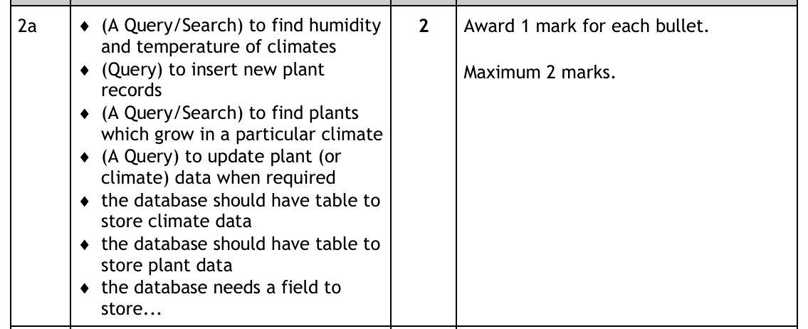
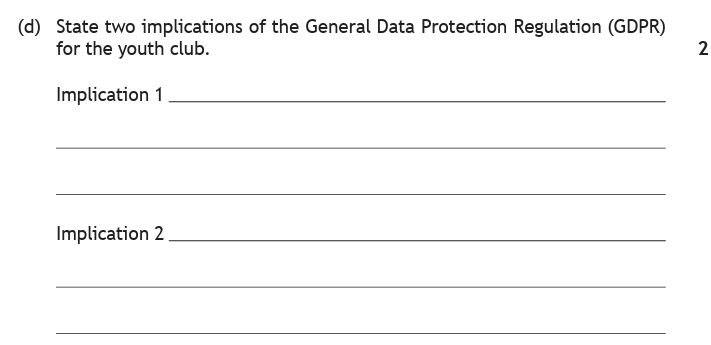
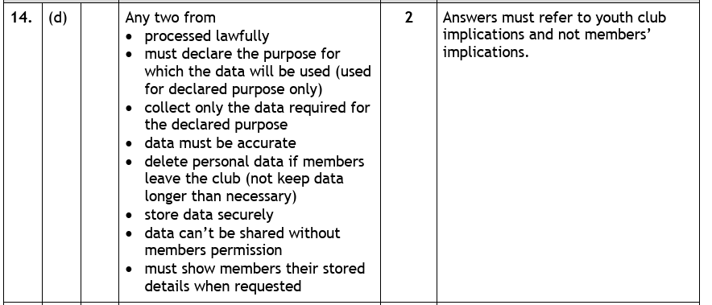
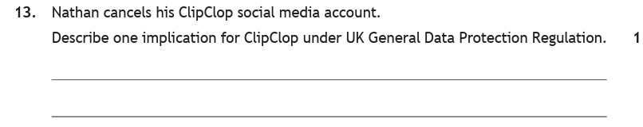
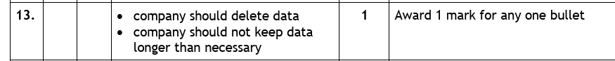

Introduction
Analysis is the first stage of building any database, and it happens entirely before you create a single table. It is the stage where you work out what the thing has to do.
That splits into two questions, and this page deals with both:
- Requirements — what must the finished database be able to do? Someone describes a problem in ordinary English, and your job is to turn that description into a precise list of things the system must deliver.
- GDPR — what does the law require of you, given that the database will hold information about real people? Almost every database you will ever design stores personal data, and that brings legal duties with it.
The two belong together because they are decided at the same moment. If a club tells you it needs to keep member records, the requirement is store member details — but GDPR immediately adds conditions: only the details you actually need, kept only as long as you need them, held securely, and deleted when the member leaves. Getting those wrong is not a bug. It is a breach of the law.
Key Terms — Requirements
Key Terms — GDPR
Requirements
Who the system is for
Two people matter when a system is being specified, and they are usually not the same person.
The end user is whoever sits down and uses the database. They are unlikely to have any technical knowledge of how it works, and they are normally not the developer who builds it or the administrator who maintains it. The system owner is the person or organisation paying for it.
A school office secretary entering pupil records is the end user; the school paying for the system is the owner. Their needs overlap but are not identical — and a solution has to meet both.
Functional and non-functional requirements
Every system has two kinds of requirement:
- Functional requirements specify exactly what the system should do — "the system must allow a new pupil to be added".
- Non-functional requirements describe how it works — "the database must respond within two seconds", "only staff may log in".
Extracting Requirements From a Description
This is the skill the assignment tests. You are given a few paragraphs about an organisation and what it wants, and you have to convert that into a list of functional requirements.
The method is more mechanical than it looks, because these descriptions are written as a bulleted list of things the organisation concluded they need — and, as a rule of thumb, each bullet yields one requirement.
For each statement in the description, ask which of these it is describing:
- Storing something → a requirement for a table or a field to hold that data.
- Finding or listing something → a requirement for a query or search.
- Adding something new → a requirement for a query to insert records.
- Changing or correcting something → a requirement for a query to update records.
- Removing something → a requirement for a query to delete records.
Those five cover almost everything, and they map directly onto the SQL you already know.
An example — the school clubs database
Here is the kind of description you would be given, for the school clubs database used throughout this section:
A school wants to keep track of the after-school clubs it runs and the pupils who attend them. Staff have been discussing what they need from the new database. They concluded that:
- They need to store the details of each club, including the day and time it meets and the member of staff who runs it.
- They already hold details of every pupil, and new pupils join throughout the year.
- They want to know which pupils attend a particular club.
- They need to be able to change a pupil's merit points when points are awarded.
Taking the bullets one at a time:
| What the description says | The functional requirement |
|---|---|
| "store the details of each club…" | The database needs a table to store club data, with fields for the meeting day, meeting time and staff lead. |
| "already hold details of every pupil" | The database needs a table to store pupil data. |
| "new pupils join throughout the year" | A query to insert new pupil records. |
| "know which pupils attend a particular club" | A query to search for the pupils attending a given club. |
| "change a pupil's merit points" | A query to update a pupil's merit points. |
Notice that the second bullet produced two requirements — a table to hold pupils, and a way to add new ones. Bullets often carry more than one, so read them for every verb, not just the first.
![Assignment question. An environmental group wants to encourage people to grow their own fruit and vegetables, and stores details on edible plants and the climates they grow in. They plan to create a database to store details about plants and climates and have been discussing the end-user requirements. They concluded that: they need to know the details of climates, including their humidity and temperature ranges; they already have a lot of information about different plants such as carrot, lettuce and watermelon and would like to add to the database when they have information about other plants; they want to know which plants grow best in a particular climate; they need to be able to amend their data when they receive new research. Question 2a: Using the information above, create two functional requirements of the database. Two marks.](../resources/ddd/worked-examples/n5_frs_q1.png)
How to tackle it: the question says "using the information above", which is an instruction to work from the bullets rather than invent anything. There are four bullets and we need two requirements, so we have plenty to choose from — the job is to phrase two of them properly.
Bullet 1 — "details of climates, including their humidity and temperature ranges." This is about storing and then looking up climate data. As a requirement: a query to find the humidity and temperature of climates. It also implies a table to store climate data, which is equally acceptable.
Bullet 2 — "would like to add to the database when they have information about other plants." Adding new records: a query to insert new plant records.
Bullet 3 — "which plants grow best in a particular climate." A search: a query to find plants which grow in a particular climate.
Bullet 4 — "amend their data when they receive new research." "Amend" means change: a query to update plant or climate data when required.

Any two of those score full marks. The mark scheme also accepts the structural answers — "the database should have a table to store plant data", "the database needs a field to store…" — so a requirement about what is stored counts just as much as one about what is done.
Watch the trap: the question asks for two and there is no credit for more, so write two good ones rather than four vague ones. And do not stray outside the description — a requirement about user logins or a mobile app is not in the text, so it cannot earn a mark however sensible it sounds.
1 mark each, maximum 2. For example: a query to find plants which grow in a particular climate, and a query to insert new plant records.
GDPR — Who Is Who
The General Data Protection Regulation is a set of rules designed to give people greater control over their personal data. It strengthens and replaces older data protection laws and updates them for the internet age, and it requires organisations holding data to be transparent about how they gather and use it.
It uses specific terms for the people involved, and exam questions depend on knowing which is which.
| Term | Who or what it is | In the school clubs example |
|---|---|---|
| Data subject | The individual whose data is being collected. Holds the rights. | Each pupil in the database. |
| Personal data | Any data that can identify an individual, directly or combined with other information. | Pupil name, date of birth, house. |
| Data controller | The organisation using the data and deciding how it is processed. Holds the duties. | The school. |
| Data processor | A third party processing the data on the controller's behalf. | An outside company hired to produce attendance reports. |
| Privacy notice | The statement telling the subject how their data will be used and how long it is kept. | The letter home explaining what the school stores and why. |
| Information Commissioner | The UK's independent regulator. Enforces the law, investigates complaints and breaches, and can issue fines. | Who a parent would complain to if the school refused to correct a record. |
What counts as personal data?
Anything that can be used to identify you directly is personal data — your name, your address, your IP address, the ID of your device, an examination number.
But it goes further than that. Data that could identify you when combined with other information is also personal data. Your postcode alone narrows you to an area; add the type of house you live in, whether it has a driveway, and how many cars are parked outside, and you can be picked out precisely. No single one of those is identifying, and together they are.
Rights of the Data Subject
The regulation gives data subjects eight specific rights over how their data is processed.
| Right | What it means |
|---|---|
| 1. To be informed | You must be told how your data will be processed, normally through a privacy notice written in clear language. |
| 2. Of access | You can see the data an organisation holds about you, in a readable format and free of charge. |
| 3. To rectification | Incorrect data must be corrected, normally within a month. |
| 4. To erasure | The "right to be forgotten" — data must be deleted when there is no longer a need to hold it. |
| 5. To restrict processing | You can block processing of your data where you have objected or where the law requires processing to stop. |
| 6. To data portability | You can move your own data to a different service where the processing is automated. |
| 7. To object | You can object to processing for direct marketing, research or "legitimate interest" reasons. |
| 8. Related to automated decision making | You can refuse to be subject to purely automated decisions or profiling. |
The four that come up most
Right to be informed. When you sign up to a service, you should be given a privacy notice telling you plainly how your data will be used and how long it will be kept. In the school clubs database, that is the letter explaining what the school records about a pupil and why.
Right of access. A pupil can ask to see everything the school holds about them. It must be provided in a readable format — digitally if the request was made digitally — and it must be free of charge.
Right to rectification. If Archie's date of birth is wrong in the Pupil table, he can require the school to correct it, normally within one month. If the school has shared the data with anyone else, the school is responsible for making sure they correct it too.
Right to erasure. The one exam questions reach for most often. Data must be erased when:
- it is no longer required for the purpose it was collected for;
- the data subject withdraws consent;
- the data subject objects and there is no valid legal reason to continue;
- the data was processed unlawfully;
- there is a legal requirement to delete it;
- it was used to offer information services to a child without parental consent.
The first of those is the one that matters in practice: when a person leaves, their data stops being needed, and it has to go. When a pupil leaves the school, the club records about them cannot simply be kept indefinitely.
The eighth right is worth one extra sentence, because it is the least intuitive. Where a decision is made about you purely by computer — an insurance company profiling you as high-risk, for instance — you have the right to have a human involved, to put your own point of view, to an explanation of the decision, and to challenge it.
Obligations on the Organisation
Every right a data subject has creates a matching duty for the organisation holding the data. These are the principles the regulation places on data controllers and processors, and they are what an exam question means when it asks for the "implications" of GDPR for a business.
| Principle | What the organisation must do |
|---|---|
| 1. Processed lawfully, fairly and transparently | Identify a lawful basis for holding the data, and be open about it. |
| 2. Used for the declared purpose only | Use the data only for what the privacy notice said it would be used for. |
| 3. Limited to what is needed | Collect only the data required for that purpose — nothing extra "just in case". |
| 4. Accurate | Keep the data correct and, where necessary, up to date. |
| 5. Not kept longer than necessary | Set a retention period and destroy the data at the end of it. |
| 6. Held securely | Protect the data — for example by encrypting it — to prevent a data breach. |
The six lawful bases
Principle 1 requires a lawful basis for processing. There are six, and any one of them is enough:
- Consent — the data subject has given permission.
- Contract — there is a contract between controller and subject, such as providing insurance.
- Legal obligation — the law requires it, as when a bank must report suspected money laundering.
- Vital interest — to protect someone's life, as when A&E accesses a medical history.
- Public task — official functions, such as a council collecting bins or providing education.
- Legitimate interest — the controller claims a reason of its own. This is the weakest, and a subject can object to it.
Retention and breaches
Principle 5 is normally implemented as a retention period — a defined length of time after which data is destroyed. In Scotland, a pupil's records are kept for five years after they leave school and are then destroyed.
Principle 6 exists to prevent a data breach: a security incident that makes personal data available to others, corrupts or damages it, or makes it unavailable. Breaches are not only dramatic hacks — data emailed to the wrong person is a breach, and so is a system failure that locks people out of their own records.
This question follows a scenario in which a youth club stores personal details about its members.

How to tackle it: the phrase to read carefully is "for the youth club". The club is the data controller, so the question is asking for its duties — the six principles — and not for the members' rights.
Working down the principles and putting each in the club's own terms gives more than enough:
- The data must be processed lawfully.
- The club must declare the purpose the data will be used for, and use it for that purpose only.
- It must collect only the data required for that declared purpose.
- The data must be accurate.
- It must delete members' data when they leave — not keeping it longer than necessary.
- It must store the data securely.
- It cannot share the data without the members' permission.
- It must show members their stored details when they ask.

Watch the trap: the marking instructions carry an explicit warning — "Answers must refer to youth club implications and not members' implications." Writing "members have the right to see their data" describes the same rule from the wrong side and scores nothing. Turn it round: "the club must show members their details when asked." Same fact, correct subject, full marks.
Notice how the last two bullets in the mark scheme are the members' rights of access and to object, rewritten as duties. That is the conversion the question is testing.
1 mark each for any two implications written from the club's point of view — for example the club must store members' data securely and the club must delete a member's data when they leave.

How to tackle it: again, the implication is asked for "for ClipClop" — the company, the data controller. And the event that has happened is that a user has left.
Once Nathan cancels his account, ClipClop no longer has any reason to hold his data. The purpose it was collected for — running his account — has ended. That engages the right to erasure on Nathan's side and, on ClipClop's side, the principle that data must not be kept longer than necessary.
So the implication is that ClipClop should delete his data.

Watch the trap: it is worth one mark, so one clear sentence is the whole answer. "ClipClop should delete Nathan's data" earns it. Do not list every principle you can remember hoping one lands — and do not answer "Nathan has the right to be forgotten", which is once again the right rule attributed to the wrong party.
1 mark: the company should delete his data, or the company should not keep the data longer than necessary.
Practice Questions
These all use the same scenario, in the way the assignment does — first the requirements, then the GDPR implications for the same organisation.
Riverbank Swimming Club wants a database to manage its members and the lessons it runs. The club committee have been discussing what they need from the new system. They concluded that:
- They need to store details of each member, including their name, date of birth, contact email address and the level they swim at.
- They run a number of lessons, each with a coach, a day, a start time and a maximum number of places.
- New members join throughout the year, and some members leave.
- They want to know which members are booked into a particular lesson.
- They need to correct a member's contact details when those change.
The club stores this information on a laptop kept in the pool office. An outside company is paid to produce monthly attendance reports from the data.
Using the information above, create three functional requirements of the database.
Marking Instructions
1 mark each, maximum 3. Any three from:
- a table to store member data (with fields for name, date of birth, email and level)
- a table to store lesson data (with fields for coach, day, start time and maximum places)
- a query to insert new member records
- a query to delete members who leave
- a query to search for the members booked into a particular lesson
- a query to update a member's contact details
The third bullet of the description carries two requirements — members joining (insert) and members leaving (delete). Reading each bullet for every verb rather than stopping at the first is what turns five bullets into six requirements.
No credit for requirements that are not in the description. A login system, a mobile app or online payment might all be sensible ideas, but none of them appears in the text.
(a) Identify the end user of this system. (b) Explain the difference between a functional and a non-functional requirement. (c) Which type are you asked to identify at National 5?
Marking Instructions
(a) 1 mark: the club committee / office staff who will use the database to manage members and lessons. Accept the coaches. The end user is the person who uses the system and is unlikely to have technical knowledge of how it works.
(b) 1 mark: a functional requirement specifies what the system should do, while a non-functional requirement describes how it works — its speed, security or reliability.
(c) 1 mark: functional requirements only.
The club itself is the system owner — the organisation paying for the system — which is not the same role as the end user, even when the same people fill both.
For the Riverbank Swimming Club system, identify: (a) the data subjects, (b) the data controller, (c) the data processor, and (d) state one thing the Information Commissioner does.
Marking Instructions
(a) 1 mark: the members — the individuals whose personal data is stored.
(b) 1 mark: Riverbank Swimming Club — the organisation using the data and deciding how it is processed.
(c) 1 mark: the outside company producing the monthly attendance reports — a third party processing the data on the controller's behalf.
(d) 1 mark: any one of — enforces data protection law, investigates complaints from data subjects, investigates data breaches, can issue fines.
Hiring a processor does not transfer responsibility. The club remains the data controller and stays accountable for what the reporting company does with the data.
State two implications of GDPR for Riverbank Swimming Club.
Marking Instructions
1 mark each, maximum 2. Any two from:
- the club must store the data securely — a laptop in the pool office should at least be encrypted and password protected
- the club must declare the purpose the data is used for and use it only for that
- the club must collect only the data it needs for that purpose
- the club must keep the data accurate
- the club must delete a member's data when they leave
- the club must show a member their stored details if asked
- the club cannot share the data without permission
Answers must be written from the club's side. "Members can ask to see their data" is the same rule stated as a right, and would not be credited — it has to be "the club must show members their data when asked".
A member cancels their membership and leaves the club. (a) Describe one implication for the club. (b) Name the right the member is exercising.
Marking Instructions
(a) 1 mark: the club should delete the member's data, as it should not be kept longer than necessary — the purpose it was collected for has ended.
(b) 1 mark: the right to erasure (also accepted: the right to be forgotten).
Part (a) asks for the club's duty and part (b) for the member's right — the same rule seen from each side. Answering (a) with "the member has the right to be forgotten" gets the sides the wrong way round and would lose that mark.
A member notices the club has recorded their email address incorrectly. (a) Name the right the member can rely on. (b) Describe what the club must do.
Marking Instructions
(a) 1 mark: the right to rectification.
(b) 1 mark: the club must correct the data, normally within one month of being told. Also accept: if the club has shared the data with anyone else — such as the reporting company — it is responsible for making sure they correct it too.
This is also principle 4 in action: the club has a standing duty to keep the data accurate, whether or not anyone complains.
Next — Turning Requirements Into a Structure
Once you know what the database has to do, the next job is working out what it has to look like: which tables, which fields, which keys, and how the tables link together.
That is the design stage — and the requirements you extracted here are exactly what it is built from.